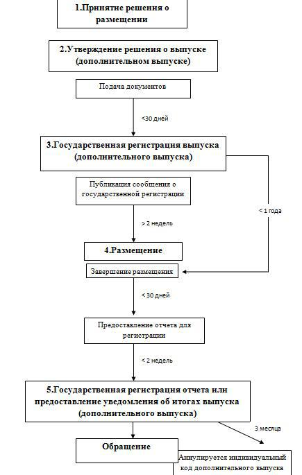

Глава 3. Эмиссия и обращение ценных бумаг

[1]
[2]
[3]
[4]
[5]
[6]
[7][2] К лицам, располагающим инсайдерской информацией, в соответствии с Федеральным законом «О противодействии неправомерному использованию инсайдерской информации и манипулированию рынком» относятся: все перечисленные
[8] Согласно действующему российскому законодательству существуют две категории акций обыкновенные и привилегированные.
[9][2] Определите из нижеперечисленных неверное утверждение, касающееся облигаций:
Акционерное общество вправе размещать облигации только в документарной форме путем выпуска сертификатов на каждую облигацию. Только в документарной форме - это и есть бред.
[10]
[11]
[12]
[13][2]Кем должна осуществляться государственная регистрация дополнительного выпуска обыкновенных акций некредитной организации, размещаемых посредством открытой подписки, если общий объем выпуска составляет 200 млн. рублей?
- I. Департаментом допуска на финансовый рынок Банка России;Запомнить.
[14][2]Кем должна осуществляться государственная регистрация выпуска облигаций государственного унитарного предприятия, размещаемых посредством закрытой подписки среди 5 лиц, если общий объем выпуска не превышает 200 млн. рублей?
- II. Территориальным управлением Банка России;Запомнить.
[15]
[16]
[17][2]Отметьте правильное утверждение, касающееся процедуры эмиссии ценных бумаг при учреждении акционерного общества.
- D. Государственная регистрация выпуска акций осуществляется одновременно с государственной регистрацией отчета об итогах выпуска акций. Тут важно прочитать, что именно при учреждении общества, т.к. это исключительная ситуация. Нужно запомнить.
[18]
[19][2]Укажите способы размещения акций общества в соответствии с российским законодательством о ценных бумагах:
I. Андеррайтинг;II. Поглощение;III. Слияние;- IV. Конвертация;
- V. Подписка;
- VI. Распределение среди учредителей общества;
- VII. Распределение среди акционеров общества;
VIII. Распределение среди кредиторов общества;
[20][2] Укажите способы размещения облигаций общества в соответствии с российским законодательством о ценных бумагах:
I. Андеррайтинг;II. Обмен;III. Приобретение;- IV. Конвертация;
- V. Подписка;
VI. Распределение среди учредителей общества;VII. Распределение среди акционеров общества;VIII. Распределение среди кредиторов общества.
[21][2] Укажите способы размещения опционов эмитента в соответствии с российским законодательством о ценных бумагах:
I. Андеррайтинг;II. Обмен;III. Приобретение;- IV. Конвертация;
- V. Подписка;
VI. Распределение среди учредителей общества;VII. Распределение среди акционеров общества;VIII. Распределение среди кредиторов общества.
[22]
[23]
[24][2]В решении о размещении эмиссионных ценных бумаг путем подписки должны быть определены: все перечисленные
[25][2]Решение о размещении ценных бумаг может быть принято советом директоров, за исключением:
I. При распределении обыкновенных дополнительных акций среди акционеров;II. При размещении путем подписки облигаций, не конвертируемых в обыкновенные акции;- III. При размещении путем закрытой подписки обыкновенных акций;
IV. При размещении путем открытой подписки обыкновенных акций в количестве 25% и менее от ранее размещенных обыкновенных акций.
[26][2]Отметьте правильное утверждение, касающееся принятия решения о размещении по закрытой подписке облигаций, конвертируемых в акции акционерного общества.
- Решение принимается большинством не менее чем в три четверти голосов владельцев голосующих акций общества, принимающих участие в общем собрании акционеров общества. Решение в 3/4 самое логичное.
[27][2]Решение о размещении посредством открытой подписки дополнительных обыкновенных акций акционерного общества, составляющих менее 25 % ранее размещенных обыкновенных акций общества, должно быть принято:
- I. Большинством голосов владельцев голосующих акций общества, принимающих участие в общем собрании акционеров общества, если принятие такого решения не отнесено уставом общества к компетенции совета директоров (наблюдательного совета) общества;
II. Большинством не менее чем в три четверти голосов владельцев голосующих акций общества, принимающих участие в общем собрании акционеров общества;III. Большинством голосов членов совета директоров (наблюдательного совета) общества, если принятие такого решения отнесено уставом общества к компетенции совета директоров (наблюдательного совета) общества;- IV. Единогласно всеми членами совета директоров (наблюдательного совета) общества, если принятие такого решения отнесено уставом общества к компетенции совета директоров (наблюдательного совета) общества.
[28][2]Решение о размещении посредством открытой подписки неконвертируемых облигаций акционерного общества должно быть принято: C. Большинством голосов членов совета директоров (наблюдательного совета) общества, если иное не предусмотрено его уставом
[29][2]Какие эмиссионные ценные бумаги могут быть размещены посредством открытой подписки в соответствии с уставом акционерного общества по решению совета директоров (наблюдательного совета) общества? все перечисленные
- I. Обыкновенные акции, составляющие менее 25% ранее размещенных обыкновенных акций общества;
- II. Привилегированные акции общества;
- III. Опционы эмитента;
- IV. Облигации, неконвертируемые в акции общества;
[30]
[31]
[32]
[33][2]Отметьте неправильное утверждение, касающееся размещения ценных бумаг путем конвертации акций в акции с большей номинальной стоимостью.
- B. Сумма, на которую увеличивается уставной капитал общества, не должна превышать разницу между суммой уставного капитала и стоимостью чистых активов общества.
[34]
[35]
[36]
[37]
[38]
[39]
[40]
[41][2]Уставом общества определено, что общее количество объявленных акций номинальной стоимостью 1 тыс. руб. составляет 5 тыс. Уставный капитал общества состоит из 1 тыс. обыкновенных акций номинальной стоимостью 1 тыс. руб. Общество увеличивает уставный капитал путем размещения 4 тыс. дополнительных акций номинальной стоимостью 1 тыс. руб. Год спустя общество принимает решение об увеличении уставного капитала. Какое количество дополнительных акций может общество разместить, не внося изменений в устав об увеличении общего количества объявленных акций?
Решение. Объявленных акций 5 тыс., а размещено только 4 тыс. Можно разместить еще 1 тыс. акций.
[42]
[43][2] Решение о выпуске эмиссионных ценных бумаг должно содержать:
I. Наименование финансового консультанта на рынке ценных бумаг, который оказывал эмитенту услуги по подготовке проспекта ценных бумаг;- II. Наименование уполномоченного органа эмитента, принявшего решение о размещении эмиссионных ценных бумаг;
- III. Дату принятия решения о размещении эмиссионных ценных бумаг;
IV. Сведения о расходах, связанных с эмиссией ценных бумаг.
[44]
[45]
[46]
[47]
[48]
[49]
[50]
[51]
[52]
[53]
[54]
[55]
[56]
[57]
[58]
[59]
[60]
[61]
[62]
[63]
[64]
[65]
[66]
[67]
[68]
[69]
[70]
[71]
[72]
[73]
[74]
[75]
[76]
[77]
[78]
[79]
[80]
[81]
[82]
[83]
[84]
[85]
[86]
[87]
[88]
[89]
[90]
[91]
[92]
[93]
[94]
[95]
[96][2]С какого момента эмиссионные ценные бумаги, выпуск которых подлежит государственной регистрации, могут поступить в обращение?
I. Сразу после их размещения;- II. Сразу после их полной оплаты;
- III. Сразу после государственной регистрации отчета (или представления в регистрирующий орган уведомления) об итогах их выпуска.
C. Одновременное соблюдение условий II и III
[97]
[98] Согласно Кодексу Российской Федерации об административных правонарушениях, нарушение эмитентом порядка (процедуры) эмиссии ценных бумаг влечет наложение административного штрафа на должностных лиц в размере от 10 000 до 30 000 руб.
[99] Согласно Кодексу Российской Федерации об административных правонарушениях, нарушение эмитентом порядка (процедуры) эмиссии ценных бумаг влечет наложение административного штрафа на юридических лиц в размере от 500 000 до 700 000 руб.
[100]
[101]
[102]
[103]
[104]
[105]
[106]
[107]
[108]
[109]
[110]
[111]
[112]
[113]
[114]
[115]
[116]